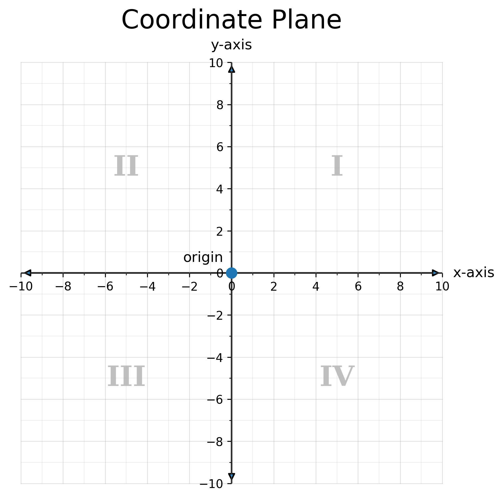
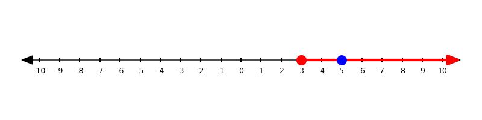
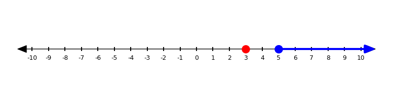
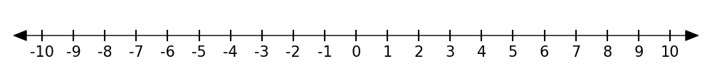
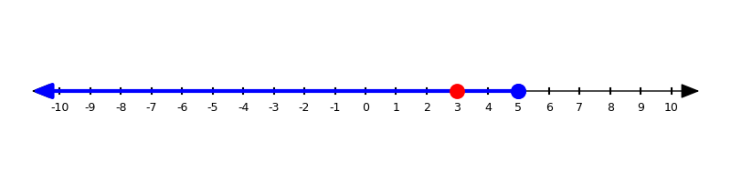
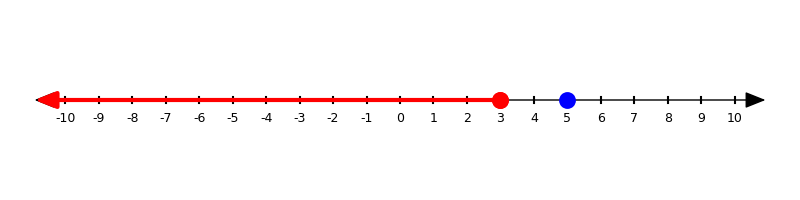
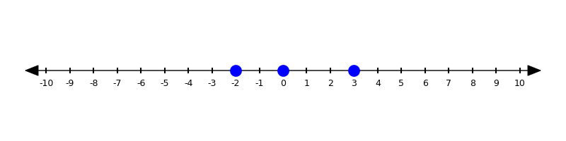
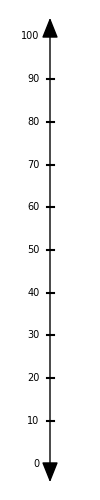

flowchart TD A[24] A --> B[6] A --> C[4] B --> D[3] B --> E[2] C --> F[2] C --> G[2]
Glossary
Absolute value
The distance a number is from zero on a number line, always expressed as a positive number or zero.
Example:
The absolute value of
-7is7.
See Also: opposite
Addition
An operation that combines two or more numbers into a total. Also called “plus”.
Example:
\(5 + 7 = 12\)
See Also: subtraction, multiplication, division, PEMDAS, order of operations
Algebra
Algebra is a branch of math that uses letters and symbols to represent numbers and relationships.
It lets us describe patterns, write rules, and solve problems that work in many different situations.
All Real Numbers
When we say the solution to an equation is all real numbers, it means that any number you plug in will make the equation true. This usually happens when both sides of the equation are exactly the same after simplifying.
To save space and make their answers more clear, mathematicians like to use \(\mathbb{R}\) in place of the words “all real numbers” or “infinitely many solutions”.
Example: \(2(x + 3) = 2x + 6\) simplifies to \(2x + 6 = 2x + 6\), which is always true. The solution is all real numbers.
See Also: no solution
Area Model
An area model (or “box method”) is a visual way to organize multiplication by breaking each number or expression into parts.
In an area model, each part forms a row or column in a box, and the box cells show the partial products. When all the partial products are added together, you get the total product. Area models work for whole numbers, decimals, and polynomials of any size.
Example: To multiply \((x + 4)(x^2 - 3x + 2)\), you can use a box with two rows and three columns. Each cell shows one partial product, and adding them gives the final expression.
See Also: product, multiplication, polynomial, partial product
Associative (Associative Property)
An operation is associative if changing how the numbers are grouped does not change the answer.
The numbers stay in the same order; only the parentheses move.
Addition and multiplication are associative. Subtraction, division, and most exponent situations are not.
Examples (associative):
\((2 + 5) + 3 = 2 + (5 + 3)\)
\((4 \cdot 3)\cdot x = 4\cdot(3\cdot x)\)
Not associative:
\((7 - 3) - 2 \ne 7 - (3 - 2)\)
We use the associative property to regroup terms or factors so it is easier to do mental math and to simplify expressions.
See also: commutative, distributive property, like terms
Axis
A straight reference line used to measure and locate points on a graph. In the coordinate plane, the x-axis runs left and right, and the y-axis runs up and down. They cross at the origin. When we talk about more than one axis, we say “axes”.
Example: On the coordinate plane, the point (4, 2) is 4 units to the right of the y-axis and 2 units above the x-axis.
See Also: coordinate plane, quadrant, number line
Base
The base is the number or variable being multiplied by itself. In a power like \(5^3\), the base is \(5\).
Example:
In \(x^4\), the base is \(x\).
See Also: exponent, variable, power
Best-Fit Line
A straight line that comes closest to all the data points on a scatter plot. It shows the general trend of the data and can be used to make predictions.
Example: In a graph of study time vs. test score, the best-fit line rises upward because students who study more tend to earn higher scores.
See Also: correlation, scatter plot
Binomial
A binomial is a polynomial with exactly two terms added or subtracted.
Example: \(x^2 + 9\) is a binomial because it has two terms: \(x^2\) and \(9\).
See Also: monomial, trinomial, polynomial
Calculate
To calculate is to find an answer by using numbers and operations (add, subtract, multiply, divide).
Example:
To calculate \(7 + 5\), we add to get 12.
See Also: evaluate, order of operations, operation
Calculus
Calculus is a branch of math that helps us understand change and motion.
It’s used to study how fast things move, how things grow or shrink, and how to find exact areas or curves.
Coefficient
A coefficient is the number in front of a variable. It tells you how many of that variable you have.
Example:
In the expression \(3x\), the coefficient is 3.
It means “3 times x.”
See Also: term, variable, polynomial, expression
Combine Like Terms
To combine like terms means to simplify an expression by adding or subtracting terms that have the same variable part.
Example:
\(3x + 2x = 5x\) because both terms are “like terms” (they each have \(x\)).
See Also: simplify, like terms, expression
Composite number
A composite number has more than two factors.
That means it can be divided evenly by numbers other than 1 and itself.
Example:
12 is composite because 2, 3, 4, and 6 all divide it evenly.
See Also: prime number, factor
Commutative (Commutative Property)
An operation is commutative if changing the order of the numbers does not change the answer.
Addition and multiplication are commutative. Subtraction, division, and most exponent situations are not.
Examples (commutative):
\(3 + 5 = 5 + 3\)
\(2x + 7 = 7 + 2x\)
\(4\cdot 3 = 3\cdot 4\)
Not commutative:
\(7 - 3 \ne 3 - 7\)
\(8 \div 2 \ne 2 \div 8\)
The commutative property lets us reorder terms in a sum or product to make simplifying and mental math easier.
See Also: associative, distributive property
Compute
To compute is another way to say find the answer in math by doing the steps.
Example:
To compute \(3 \times 4\), we multiply to get 12.
See Also: evaluate, order of operations
Constant
A constant is a number that does not change. It stays the same no matter what the variable is.
Example:
In the expression \(x + 5\), the number 5 is a constant.
See Also: term, variable, expression
Convert
To convert means to change a number from one form to another, like from a fraction to a decimal, or a decimal to a percent.
Example:
\(\frac{3}{4} = 0.75 = 75\%\) — all are equivalent, just written differently.
See Also: fraction, decimal, percent
Coordinate Plane
A flat grid formed by the intersection of the x-axis and y-axis at the origin. It’s used to graph points, lines, and relationships between two numbers or variables.

Example: When you graph the equation y = 2x + 1, every point on the coordinate plane that satisfies the equation makes a straight line.
See Also: axis, number line, quadrant, ordered pair
Correlation
Correlation describes how two variables are related. It tells you whether they tend to increase together, decrease together, or move in opposite ways. Correlation can be positive, negative, or close to zero if there is no clear pattern.
Example:
As the number of hours you practice a skill increases, your performance often improves — this is a positive correlation.
See Also: best-fit line, scatter plot
Counterexample
A counterexample is a single, specific example that shows a statement is not always true. Finding just one counterexample is enough to show the statement is false.
Example:
Statement: “All even numbers are multiples of 4.” Counterexample: 6 is even but not a multiple of 4.
Decimal
A decimal is a number that uses a dot (.) to show values less than 1. It’s based on powers of 10.
Example:
\(0.5\) means 5 tenths, and \(3.14\) means 3 and 14 hundredths.
See Also: fraction, percent, part, convert, place value
Degree
The degree of a term is the value of its exponent. The degree of a polynomial is the highest exponent that appears on its variables.
Example: In \(4x^3 - 2x + 7\), the highest exponent is \(3\), so the degree is \(3\).
See Also: polynomial, term, exponent
Denominator
The denominator is the bottom number in a fraction. It tells how many equal parts the whole is divided into.
Example:
In the fraction 3/4, the denominator is 4.
See Also: numerator, fraction, divisor
Difference
The difference is the result of subtracting one number or expression from another.
Example:
The difference between \(15\) and \(9\) is \(6\).
See Also: sum, subtraction, quotient, product, addition
Discount
A discount is an amount taken off the original price. It’s usually shown as a percent.
Example:
A 25% discount on a $40 shirt means you save $10. You pay $30.
See Also: markup
Distributive property
A rule that lets you multiply a number by each term inside parentheses and then add or subtract the results.
In symbols:
\(a(b+c)=ab+ac\) and \(a(b-c)=ab-ac\). You can also use it in reverse to factor: if \(ab+ac\), you can write \(a(b+c)\).
Example:
\(4(x+3)=4x+12\) With subtraction: \(-2(y-5)=-2y+10\) Reverse (factoring): \(8x+12=4(2x+3)\)
See Also: associative property, multiplication
Division
An operation that splits a number into equal parts.
Example:
\(12 \div 3 = 4\) (12 split into 3 equal parts)
See Also: addition, subtraction, multiplication, operation, fraction
Divisible
A number is divisible by another number if it divides evenly with no remainder.
There are some quick tests that help you check:
- Divisible by 2: the number ends in 0, 2, 4, 6, or 8.
- Divisible by 3: the sum of the digits is divisible by 3.
- Divisible by 4: the last two digits form a number divisible by 4.
- Divisible by 5: the number ends in 0 or 5.
- Divisible by 6: the number is divisible by both 2 and 3.
- Divisible by 9: the sum of the digits is divisible by 9.
- Divisible by 10: the number ends in 0.
See Also: factor, prime factorization, multiple
Divisor
A divisor is the number you divide by in a division problem. It tells you how many parts to split something into.
Example:
In \(12 \div 3 = 4\), the number 3 is the divisor because it divides 12 into 3 equal parts.
See Also: division, denominator, factor
Domain
The domain of a relationship or function is the set of all input values that are allowed or make sense in the situation.
Example:
If \(x\) represents the number of tickets sold, then the domain is whole numbers \(0, 1, 2, \dots\) (you can’t sell a negative number of tickets).
See Also: range, function, input
Elimination
Elimination is a method for solving a system of equations by adding or subtracting the equations so that one variable cancels out. After one variable is eliminated, you can solve for the other and then substitute back to find both values.
Example:
\[ \begin{align*} 2x + y &= 10 \\ 2x - y &= 2 \end{align*} \]
Add the equations to eliminate \(y\): \(4x = 12 \Rightarrow x = 3\). Substitute back to get \(y = 4\). The solution is \((3, 4)\).
See Also: substitution, system of equations
Equation
An equation is a math sentence that says two things are equal.
It has an equals sign (=) and shows a relationship between numbers or expressions.
Examples:
\(2 + 3 = 5\) and \(x + 1 = 7\) \((x - 5)^2 = 3x - 1\)
See Also: solution, inequality, solve, expression, literal equation, linear equation
Equivalent
Two numbers are equivalent if they have the same value, even if they look different.
Example:
\(\frac{1}{2}\), 0.5, and 50% are all equivalent.
See Also: equivalent expressions, equation
Equivalent expressions
Two expressions are equivalent if they have the same value for every number you substitute or if they can be transformed into the same expression using properties of operations.
Example:
Take the following two expressions:
- \(3x - 3\)
- \(3(x-1)\)
These expressions are equivalent because, by the distributive property, expression B is \(3x - 3\).
See Also: equivalent, expression, equation
Evaluate
To find the value of an expression by substituting numbers for the variables and performing the calculations.
Example:
Evaluate the expression \(2x - 5\) when \(x = 3\).
\(2(3) - 5 = 6 - 5 = 1\)
See Also: calculate, substitute, substitution
Even
An even number is any whole number that can be divided by 2 with no remainder. In other words, it ends in 0, 2, 4, 6, or 8.
Example: 6 is even because \(6 \div 2 = 3\) with no leftover. 14, 28, and 100 are also even.
See Also: odd, whole number, skip count
Evidence
Evidence is information that supports a claim. It can be numbers, calculations, steps, measurements, a diagram, a table, or a specific example that helps show why something is true (or not true).
Example:
Claim: “This pattern goes up by 3 each time.” Evidence: The terms are 2, 5, 8, 11. The differences are +3, +3, +3, so the claim is supported.
See Also: counterexample, proof
Expand
To expand an expression means to remove parentheses by multiplying.
You use the distributive property to spread multiplication over addition or subtraction.
Example:
\(3(x+2)\) expands to \(3x+6\).
\((x+4)(x+1)\) expands to \(x^2 + 5x + 4\).
See Also: simplify, distributive property
Exponent
The exponent tells how many times to multiply the base by itself. In \(5^3\), the exponent is \(3\), which means \(5\cdot5\cdot5\).
Example:
\(x^4\) means \(x\cdot x\cdot x\cdot x\) (four \(x\)’s multiplied).
See Also: base, term, product rule, power of a power, quotient rule, negative exponent, zero exponent, power
Expression
A math sentence made up of numbers, variables, operations, and sometimes parentheses — but no equals sign.
Example:
\(4 + 2 \times (5 - 1)\) is an expression.
Another Example:
\(4(x-3)^2\) is also an expression
See Also: equation, simplify, variable, operation
Factor
A factor is a whole number that divides another number evenly — with no remainder.
If you can split something into equal groups with no leftovers, the group size is a factor.
Example:
3 is a factor of 12 because 3 × 4 = 12.
Note: Factor can also be used as a command. For example, “factor the expression \(2x-2\)” asks you to take out the greatest common factor giving \(2(x-1)\).
See Also: factor tree, factoring, whole number, multiple, greatest common factor
Factoring
Factoring means breaking something down into smaller parts that multiply together to make it.
Examples:
Factoring a number: 12 can be factored into \(3 \times 4\) or \(2 \times 6\).
Factoring an expression: \(x^2 + 5x + 6\) can be factored into \((x + 2)(x + 3)\).
See Also: polynomial, factor, expression, factor tree
Factor tree
A factor tree is a way to break a number into its smallest building blocks — the prime numbers that multiply to make it.
You keep splitting the number into smaller factors until you can’t go any further.
Example: Here is a factor tree for 24:
This tells us that the prime factorization of 24 is \(2^3 \cdot 3\).
See Also: factor, prime factorization
Formula
A formula is a rule or equation that shows how different quantities are related. It usually includes variables and tells you how to calculate one value from others.
Example:
The area of a rectangle uses the formula \(A = \ell w\), which means you can find the area by multiplying the length and width.
See Also: literal equation
Fraction
A fraction shows a part of a whole. It has a numerator (top number) and a denominator (bottom number).
The denominator tells how many equal parts the whole is divided into, and the numerator tells how many of those parts you have.
Example:
In 3/4, the fraction means 3 out of 4 equal parts.
See Also: division, numerator, denominator, part, ratio, quotient
Fractional Exponent
A fractional exponent represents a root and a power. The denominator is the root, and the numerator is the power: \(a^{\tfrac{m}{n}}=\sqrt[n]{a^m}\) (for real numbers, typically \(a\ge0\)).
Example:
\(16^{\tfrac{3}{4}}=\sqrt[4]{16^3}=\sqrt[4]{4096}=8\).
See Also: exponent
Function
A function is a rule that takes an input, does something to it, and produces exactly one output. We often write a function with a name like \(f(x)\), which reads “f of x” and means “the rule \(f\) applied to input \(x\).”
Example:
If \(f(x) = 2x+3\), then:
- Input 5 → Output 13
- Input -1 → Output 1
See Also: function notation, output, input, linear equation
Function Notation
Function notation is a way of writing rules or equations that show how one variable depends on another. Instead of writing \(y = 2x + 1\), we can write \(f(x) = 2x + 1\). This means “the function \(f\) takes an input \(x\) and gives an output \(f(x)\).”
Example: If \(f(x) = 2x + 1\), then \(f(3) = 2(3) + 1 = 7\).
See Also: function
Grade
A grade often shows how well someone did using a percent or letter. It’s usually based on part out of whole.
Example:
If you got 18 out of 20 questions right, your grade is \(\frac{18}{20} = 90\%\).
Greater than
A number is greater than (>) another number if it is further to the right on the number line.
Example:
\(5 > 3\) is true

but \(3 > 5\) is false
See Also: inequality, less than
Greatest Common Factor
The greatest common factor (GCF) is the biggest number that divides evenly into two or more numbers. It is the largest factor they have in common.
You can find the GCF by listing all the factors and finding the ones shared between the numbers.
Example:
The GCF of 18 and 24 is 6, because 6 is the largest number that goes into both 18 and 24 without a remainder.
Factors of 18: 1, 2, 3, 6, 9, 18
Factors of 24: 1, 2, 3, 4, 6, 8, 12, 24
Shared factors: 1, 2, 3, 6
The greatest is 6
See Also: factor, factoring, prime factorization, simplify, relatively prime
Horizontal
Side to side, like the horizon. Level ground is horizontal.
Example:
This is a horizontal number line.

See Also: vertical, slope, axis
Hypothesis
A hypothesis is a claim you think might be true and plan to test.
In an experiment, if you find a case where the hypothesis is not true you can say that it is false. If you find a case where it is true, you have evidence that the hypothesis is correct but not proof.
Examples:
“Plants grow better when spoken to”.
“These two expressions are equivalent”.
See Also: counterexample, evidence
Improper Fraction
An improper fraction is a fraction where the top number (numerator) is equal to or greater than the bottom number (denominator). That means the value is 1 or more.
Example:
\(\frac{5}{4}\) is an improper fraction because 5 is greater than 4. It means “five fourths,” or \(1\frac{1}{4}\) as a mixed number.
Another example:
\(\frac{8}{3}\) means “eight thirds,” or \(2\frac{2}{3}\).
See Also: mixed number, fraction
Inequality
An inequality is a math statement that compares two values or expressions using symbols like <, >, ≤, or ≥. Instead of saying two sides are equal, it shows which side is larger or smaller.
Example:
The inequality ( x + 5 < 12 ) means that ( x + 5 ) is less than 12.
See Also: equation, less than, greater than
Infinitely
The word infinitely means “without end” or “going on forever.” In math, something is infinite if it never stops or has no limit.
Example: The number line goes on infinitely in both directions. There are infinitely many decimals between 0 and 1.
See Also: infinity, all real numbers
Infinity
Infinity is not a number — it’s the idea of something that goes on forever without ending. In math, we use the symbol ∞ to represent infinity.
Example: The number line keeps going toward infinity in both directions. You can keep counting forever — there’s no biggest number because numbers go on to infinity.
See Also: all real numbers
Integer
An integer is a whole number (not a fraction or decimal) that can be positive, negative, or zero.
Examples:
-3,0,5,100
See Also: whole number, fraction, decimal
Intersection
An intersection is the point where two lines (or curves) meet on a graph. In a system of equations, the intersection represents the solution — the values that work in both equations.
Example: The lines \(y = 2x + 1\) and \(y = -x + 4\) intersect at \((1, 3)\), meaning that \((1, 3)\) makes both equations true.
See Also: system of equations, perpendicular, solution
Interval
An interval is a continuous stretch of the number line between two values. It may include or exclude its endpoints, depending on the context or inequality symbols used.
Example:
The inequality \(1 < x \le 4\) describes the interval of numbers greater than 1 and up to and including 4.
See Also: inequality, number line, domain
Inverse Operations
Inverse operations are pairs of operations that undo each other. When you perform one, you can use its inverse to get back to where you started.
Addition and subtraction are inverses. Multiplication and division are inverses. We use inverse operations to isolate a variable when solving equations.
Example: The inverse of adding 5 is subtracting 5. The inverse of dividing by 3 is multiplying by 3.
See Also: solve, equation, operation
Less than
A number is less than (<) another number if it is further to the left on the number line.
Example:
\(3 < 5\) is true

but \(5 < 3\) is false
See Also: inequality, greater than
Like terms
Terms whose variable part matches exactly — same variables with the same exponents (order doesn’t matter). You can combine like terms by adding or subtracting their coefficients. Constants (no variables) are like terms with other constants.
Examples:
- \(2x\) and \(5x\)
- \(15y^2\) and \(-y^2\)
- \(5\) and \(-8\)
Counter Examples:
- \(12x\) and \(15x^2\) are not like terms.
- \(2y\) and \(2x\) are not like terms.
- \(42\) and \(42z\) are not like terms.
See Also: term, variable, combine like terms
Linear Equation
A linear equation is an equation where the variable has an exponent of 1. Its graph is always a straight line.
In Algebra 1, linear equations usually look like:
\[ ax + b = c \]
where \(a\), \(b\), and \(c\) are numbers.
Example: \(3x + 7 = 19\) is a linear equation. Solving gives \(x = 4\).
See Also: linear model, equation, best-fit line
Linear Model
An equation that shows a steady rate of change between two quantities. It follows the pattern \(y = mx + b\), where \(m\) is the slope (rate) and \(b\) is the starting value.
Example: If a taxi costs $3 to start plus $2 per mile, the linear model is \(C(d) = 2d + 3\).
See Also: linear equation, slope, y-intercept
Literal Equation
A literal equation is an equation that uses letters to represent values. These letters can stand for numbers or other variables. Solving a literal equation means getting one variable by itself in terms of the others.
Example:
In the formula \(A = lw\), you can solve for \(l\) by dividing both sides by \(w\): \(l = \dfrac{A}{w}\).
Markup
A markup is the amount added to a cost to set a higher selling price, usually as a percent.
Example:
If a store buys a toy for $10 and adds a 50% markup, the price becomes $15.
See Also: discount
Mean
The mean of a data set is what we usually call the average. You find it by adding all the values and dividing by how many there are.
Example:
The mean of 4, 7, and 9 is \(\dfrac{4 + 7 + 9}{3} = \dfrac{20}{3} \approx 6.67\).
See Also: median, mode, standard deviation
Median
The median is the middle value in a data set when the numbers are arranged in order. If there are two middle values, the median is the mean of those two numbers.
Example:
For 3, 8, 10, 12, 15 the median is 10 (the middle value).
For 2, 4, 7, 9 the median is \(\dfrac{4 + 7}{2} = 5.5\).
Mixed Number
A mixed number has a whole number and a fraction combined into one value.
Example:
\(2\frac{1}{4}\) means 2 wholes and 1 fourth. It’s the same as \(\frac{9}{4}\).
See Also: improper fraction, fraction
Mode
The mode of a data set is the value that appears most often. A data set can have one mode, more than one mode, or no mode at all.
Example:
In 5, 7, 7, 8, 9, the mode is 7 because it appears more times than the other numbers.
Monomial
A monomial is a polynomial with just one term. It can be a number, a variable, or a coefficient times a variable with an exponent.
Example: \(5x^4\) is a monomial. So are \(7\) and \(-3y\).
See Also: polynomial, term, coefficient, variable, exponent
Multiple
A multiple is what you get when you multiply a number by 1, 2, 3, and so on.
Example:
5,10,15, and20are all multiples of5.
See Also: factor, prime factorization, skip count
Multiplication
A math operation that means repeated addition or combining equal groups.
Example:
\(4 \times 3 = 12\) (4 groups of 3)
See Also: product, operation, division
Multiplication by proximity
Multiplication by proximity means to multiply two things that are next to each other but with no symbol like \(\times\), \(\cdot\), or \(*\).
Examples
- \(3x\)
- \(5(x-1)\)
- \((2x +5)(3x-1)\)
See Also: multiplication, parentheses, distributive property, product
Negative Exponent
A negative exponent means the reciprocal (move the factor across the fraction bar): \(a^{-n}=\dfrac{1}{a^n}\), and \(\dfrac{1}{a^{-n}}=a^n\) (for \(a\ne0\)).
Example:
\(k^{-3}=\dfrac{1}{k^3}\).
No Solution
An equation has no solution when no value for the variable will make it true. This happens when the variable terms cancel out and you’re left with a false statement.
Often, mathematicians use \(\varnothing\) in place of “no solution”. It means the “null set” which is a fancy way of saying, the answer with nothing in it.
Example: \(4x + 5 = 4x - 2\) simplifies to \(5 = -2\), which is false. The solution is no solution.
See Also: equation, solution, all real numbers
Notation
Notation is the system of symbols and marks we use to represent mathematical ideas. It gives us a quick, consistent way to write numbers, operations, and rules without using long sentences.
Example:
The expression \(3x + 2\) uses algebraic notation: the number \(3\) is a coefficient, \(x\) is a variable, and the \(+\) sign shows addition.
See Also: function
Number line
A straight line used to show numbers in order. It usually has zero in the middle, with positive numbers to the right and negative numbers to the left.
Number lines help you visualize math operations and compare values.
Example:
-2,0, and3are all on the number line.
See Also: axis, whole number, integer
Number sense
Number sense is a person’s feel for how numbers work. It means you understand what numbers mean, how they relate to each other, and what answers seem reasonable.
People with strong number sense can estimate, do mental math, notice patterns, and tell when an answer is too big or too small.
Example:
If someone says that \(20\%\) of 50 is 40, good number sense tells you that cannot be right, because \(20\%\) of 50 should be much smaller than 50.
Numerator
The numerator is the top number in a fraction. It tells how many parts you have.
Example:
In the fraction 3/4, the numerator is 3.
See Also: fraction, denominator
Negative
A number is negative if it is less than zero.
On a number line, negative numbers are to the left of zero.
Example:
-4is a negative number.
See Also: positive, subtraction, number line
Odd
An odd number is a whole number that cannot be divided evenly by 2. It always has 1 left over. Odd numbers end in 1, 3, 5, 7, or 9.
Example: 5 is odd because \(5 \div 2 = 2\) with 1 left over. 11, 33, and 101 are also odd.
Operation
An operation is a math action you do with numbers — like adding, subtracting, multiplying, or dividing.
Example:
In \(7 + 3\), the operation is addition.
In \(12 \div 4\), the operation is division.
See Also: addition, subtraction, multiplication, division, order of operations, PEMDAS
Opposite
Two numbers that are the same distance from zero on a number line, but on opposite sides.
Their sum is always zero.
Example:
-3and3are opposites.
See Also: absolute value, number line
Ordered Pair
A pair of numbers written in parentheses, like (x, y), that tells the exact location of a point on the coordinate plane. The first number is the x-coordinate (horizontal position), and the second is the y-coordinate (vertical position).
Example: The ordered pair (-3, 5) means move 3 units left and 5 units up from the origin.
See Also: coordinate plane, axis
Order of Operations
The specific order you follow to simplify expressions: Parentheses → Exponents → Multiply/Divide → Add/Subtract, or PEMDAS.
Multiplication and division are done left to right, whichever comes first. Same with addition and subtraction — they are also done left to right.
Example:
In \(3 + 4 \times 2\), you multiply first: \(3 + 8 = 11\)
Origin
The point where the x-axis and y-axis intersect, written as (0, 0). It’s the “starting point” for locating all other points on the coordinate plane.
Example: The origin is where both coordinates are zero — right in the center of the grid.
See Also: coordinate plane, ordered pair, axis
Output
The output is the result you get after a function or rule is applied to an input. Each input has exactly one output in a function.
Example:
If \(f(x) = 2x + 3\) and the input is \(x=4\), then the output is \(f(4)=11\).
See Also: function, input, substitution
Parallel
Two lines that never meet because they have the same slope but different \(y\)-intercepts. Parallel lines stay the same distance apart everywhere on the graph.
Example: \(y = 2x + 3\) and \(y = 2x - 4\) are parallel because both have a slope of \(2\).
See Also: slope, perpendicular
Parentheses
A grouping symbol that tells you what to do first in an expression.
Example:
In \((2 + 3) \times 4\), you add first: \(5 \times 4 = 20\)
See Also: order of operations, multiplication by proximity, distributive property
Part
A part is one piece of the whole. It’s often what you’re looking for in a percent or fraction problem.
Example:
In 20% of 50, the part is 10. (Because 20% of 50 is 10.)
Partial Product
A partial product is the result of multiplying one part of an expression by one part of another expression. When you multiply polynomials (or even whole numbers using place value), each pair of pieces creates its own partial product. After finding all the partial products, you combine them to get the final answer.
Example: In the product \((x + 3)(x + 5)\), the four partial products are \(x \cdot x\), \(x \cdot 5\), \(3 \cdot x\), and \(3 \cdot 5\). Adding those partial products gives the full product \(x^2 + 8x + 15\).
See Also: product, area model
Perpendicular
Two lines that intersect to form a right angle (90°). Their slopes are negative reciprocals — their products multiply to \(-1\).
Example: The line \(y = 2x + 1\) is perpendicular to \(y = -\tfrac{1}{2}x + 4\) because \(2 \times (-\tfrac{1}{2}) = -1\).
See Also: parallel, slope, reciprocal
Place Value
Place value tells you how much each digit is worth based on where it is in the number.
Example:
In 23.4, the 2 is worth 20 (tens), the 3 is worth 3 (ones), and the 4 is worth 4 tenths.
See Also: simplify, convert, decimal
PEMDAS
PEMDAS is an acronym that helps us remember the order of operations.
P - parentheses E - exponents M - multiplication D - division A - addition S - subtraction
Some people remember PEMDAS as “Please Excuse My Dear Aunt Sally”.
Remember that multiplication and division are the same operation as each other and so we do them left to right. The same is true for addition and subtraction.
See Also: order of operations, operation
Percent
A percent is a way of expressing a number out of 100. The symbol % means “per hundred.”
Example:
25% means 25 out of 100. It’s the same as \(\frac{1}{4}\) or 0.25.
See Also: fraction, decimal, convert, ratio
Point-Slope Form
A way to write the equation of a line when you know its slope and one point on the line. The form is:
\[ y - y_1 = m(x - x_1) \]
Example: A line passing through \((3, 5)\) with slope \(2\) can be written as \(y - 5 = 2(x - 3)\).
See Also: linear model, slope-intercept form, standard form, linear equation, slope
Polynomial
A polynomial is a sum or difference of terms where each term has:
- a number (coefficient)
- a variable
- a whole-number exponent
Polynomials can have one term, two terms, or many terms.
Example: \(3x^2 + 2x - 5\) is a polynomial with three terms.
See Also: term, coefficient, monomial, binomial, trinomial, expression, degree
Positive
A number is positive if it is greater than zero.
On a number line, positive numbers are to the right of zero.
Example:
5is a positive number.
See Also: negative, number line, addition
Power
A power is a compact way to write repeated multiplication. It has a base and an exponent. For \(a^n\), \(a\) is the base and \(n\) is the exponent.
Example:
\(2^5\) is a power that equals \(2\cdot2\cdot2\cdot2\cdot2=32\).
See Also: exponent, base, multiplication
Power of a Power (Exponents)
When raising a power to another power, multiply the exponents: \((a^m)^n=a^{m\cdot n}\).
Example:
\((x^3)^2=x^{3\cdot2}=x^6\).
See Also: exponent, product rule, quotient rule, zero exponent
Prime Number
A number is prime if it has exactly two factors: 1 and itself.
Examples:
2,3,5,7,11
See Also: composite number, prime factorization, factor
Prime factorization
Prime factorization means writing a number as a product of prime numbers.
Example:
18 = 2 × 3 × 3or2 × 3²These are the prime building blocks of 18.
See Also: factor, prime number, product, factor tree
Product
A product is the result of multiplying two or more numbers.
Example:
The product of 4 and 6 is
24, because4 × 6 = 24.
See Also: multiplication, sum, difference, quotient
Product Rule (Exponents)
When multiplying powers with the same base, add the exponents: \(a^m\cdot a^n=a^{m+n}\).
Example:
\(x^4\cdot x^3=x^{4+3}=x^7\).
See Also: exponent, quotient rule, zero exponent, power of a power
Proof
A proof is a clear, step-by-step explanation that shows a statement is always true. A good proof uses definitions, properties, and facts we already know, and explains why each step makes sense. Trying many examples is helpful evidence, but it is not a proof.
Example:
Claim: “The sum of two odd numbers is even.” Write two odd numbers as \(2k+1\) and \(2m+1\) (where \(k\) and \(m\) are whole numbers). \((2k+1)+(2m+1)=2k+2m+2=2(k+m+1)\). This is \(2 \times\) a whole number, so it is even. Therefore, the claim is proven.
See Also: hypothesis, evidence, counterexample
Proportion
A proportion shows two equal ratios. It tells you that two fractions or comparisons are the same.
Example:
\(\frac{2}{3} = \frac{4}{6}\) is a proportion.
See Also: ratio, percent, fraction, quotient
Quadrant
One of the four regions of the coordinate plane divided by the x-axis and y-axis. Quadrants are numbered I, II, III, IV, starting in the top-right and moving counterclockwise.
Example: A point with positive x and positive y values lies in Quadrant I.
See Also: coordinate plane, axis, origin
Quotient
A quotient is the result of dividing one number by another.
Example:
The quotient of 20 divided by 5 is
4, because20 ÷ 5 = 4.
See Also: fraction, division, product, sum, difference
Quotient Rule (Exponents)
When dividing powers with the same base, subtract the exponents: \(\dfrac{a^m}{a^n}=a^{m-n}\).
Example:
\(\dfrac{y^8}{y^2}=y^{8-2}=y^6\).
See Also: exponent, power of a power, zero exponent, product rule, negative exponent, quotient
Rate
A rate compares two different units, like miles per hour or cost per item.
Example:
If you drive 60 miles in 2 hours, your rate is 30 miles per hour.
See Also: slope, ratio, linear model
Ratio
A ratio compares two amounts to show how much of one thing there is compared to another. You can write a ratio with words (“3 to 2”), with a colon (“3:2”), or as a fraction (\(\frac{3}{2}\)).
Example:
If there are 6 boys and 4 girls in a group, the ratio of boys to girls is 6 to 4, or 3 to 2 after simplifying.
Range
The range of a relationship or function is the set of all output values it can produce.
Example:
If \(f(x) = 2x + 3\) and the domain is \(x = 1, 2, 3\), then the outputs are \(5, 7, 9\). The range is \(\{5, 7, 9\}\).
See Also: domain, function, output
Real number
A real number is any number that can be placed on the number line. This includes whole numbers (integers), fractions, and decimals. Some decimals end or repeat (like 2.75 or 0.333…), and some never repeat (like √2 or π). All of these are real numbers.
Note: There are also imaginary numbers, like √(-1), which we call i. Imaginary numbers are not on the number line. When we combine real and imaginary numbers, we get complex numbers (numbers in the form a + bi). You will hear more about these in Algebra 2!
Example:
Real numbers: \(-3,\; 0,\; 4.5,\; \frac{3}{7},\; 2.75,\; \sqrt{2},\; \pi\)
Not real: \(\sqrt{-1}=i\), \(5+2i\) (complex)
See Also: whole number, integer, decimal, number line, all real numbers, positive, negative
Reciprocal
The reciprocal of a number is what you multiply it by to get 1. You can find it by flipping the numerator and denominator of a fraction.
Example:
The reciprocal of \(\frac{2}{3}\) is \(\frac{3}{2}\), because \(\frac{2}{3} \times \frac{3}{2} = 1\).
The reciprocal of 5 is \(\frac{1}{5}\).
See Also: fraction, division, quotient, inverse operations
Relatively Prime
Two numbers are relatively prime if they have no common factors other than 1.
This means their greatest common factor (GCF) is 1, even if neither number is prime.
Example:
8 and 15 are relatively prime because they share no factors except 1. 8 has factors: 1, 2, 4, 8 15 has factors: 1, 3, 5, 15
See Also: prime number, greatest common factor, factor
Remainder
A remainder is what’s left over after dividing when the number doesn’t go in evenly.
Example:
10 ÷ 3 = 3with a remainder of1, because3 × 3 = 9and there’s1left.
Result
The result is the final answer you get after evaluating or simplifying an expression.
Example:
If you evaluate \(3x+4\) when \(x=2\), the result is \(3(2)+4=10\).
See Also: solution, evaluate, expression
Residual
A residual measures how far a data point is from a model’s prediction. For a line of best fit, the residual is
\[ \text{residual} = \text{actual y} - \text{predicted y}. \]
Positive residuals are points above the line; negative residuals are below the line.
Example:
If the line of best fit predicts \(\hat{y} = 12\) for some \(x\), but the actual value is \(y = 15\), then the residual is \(15 - 12 = 3\).
See Also: best-fit line, scatter plot
Scatter Plot
A scatter plot is a graph that shows pairs of data points as dots on a coordinate plane. Each dot represents one observation, helping you see patterns, clusters, or possible relationships between two variables.
Example:
A scatter plot of study time vs. test score might show that students who study more tend to earn higher scores.
See Also: best-fit line, scatter plot, correlation
Simplest Form
A fraction is in simplest form when the numerator and denominator have no common factors except 1.
In other words, the fraction can’t be reduced any further.
Example:
\(\frac{6}{8}\) is not in simplest form because both numbers can be divided by 2. \(\frac{3}{4}\) is the simplest form of \(\frac{6}{8}\).
See Also: expression, simplify, fraction
Simplify
To simplify a number or expression means to rewrite it in a cleaner or shorter way — without changing its value. In math, we often simplify fractions, expressions, or equations to make them easier to work with.
Example:
The fraction \(\frac{12}{20}\) can be simplified by dividing both the numerator and denominator by 4:
\[\frac{12}{20} = \frac{3}{5}\]
This simpler fraction means the same thing — it’s just written with smaller numbers.
See Also: simplest form, expression, combine like terms, distributive property, expand
Skip Count
Skip counting means counting forward (or backward) by a number other than 1 — like 2, 5, or 10. It’s a way to count faster using patterns.
Example:
Skip counting by 5: 5, 10, 15, 20, 25, …
Skip counting by 3: 3, 6, 9, 12, 15, …
See Also: multiple, factor, number line
Slope
A number that shows how a line tilts — how much it goes up or down as you move left or right on a graph. It describes both the direction and the steepness of a line.
If the line goes up from left to right, the slope is positive. If it goes down, the slope is negative. A bigger slope means a steeper line.
Example: A line that rises 2 units for every 3 units it moves right has a slope of \(\tfrac{2}{3}\).
See Also: linear equation, rate, ratio, y-intercept, slope formula
Slope Formula
The equation used to find the slope of a line by comparing how much \(y\) changes to how much \(x\) changes. It’s written as:
\[ m = \frac{\Delta y}{\Delta x} \]
where
- Δy means “change in y” (up or down), and
- Δx means “change in x” (left or right).
Example:
If a line passes through the points (1, 2) and (4, 8), then \(m = \dfrac{8 - 2}{4 - 1} = \dfrac{6}{3} = 2\).
See Also: slope, formula, linear model, ordered pair, ratio
Slope-Intercept Form
The slope-intercept form of a line is the equation \(y = mx + b\).
Where \(m\) is the slope (how steep the line is) and \(b\) is the y-intercept (where it crosses the y-axis).
Example: In \(y = 2x + 1\), the slope is \(2\) and the y-intercept is \(1\).
See Also: linear model, linear equation, slope, y-intercept, point-slope form, standard form
Solution
A solution is any value of a variable that makes an equation true. If there’s more than one answer, we call the set of all answers the solution set.
Example:
For \(x + 4 = 9\), the solution is \(x = 5\). Check: \(5 + 4 = 9\) ✓. For \(|x| = 3\), the solution set is \(\{-3,\,3\}\) because both values make the equation true.
See Also: equation, result, inequality, value
Solve
To solve an equation means to find every value of the variable that makes the equation true — so both sides are equal. The answer(s) you find are the solution (or solution set).
Example:
Solve \(x + 9 = 11\). Subtract 9 from both sides: \(x = 2\). Check: \(2 + 9 = 11\) ✓.
See Also: equation, solution, result, simplify, value
Standard Deviation
Standard deviation measures how spread out the values in a data set are from the mean. A small standard deviation means the data are close to the mean; a large one means the data are more spread out.
Example:
Two classes might both have a mean score of 80 on a test, but the class with a larger standard deviation has scores that are more spread out (more low and high scores).
Standard Form
Standard form is a way of writing an expression or equation using an agreed-upon order.
The exact rules depend on the type of problem:
- Polynomials: write terms from highest degree to lowest degree.
- Linear equations: write the equation in the form \(Ax + By = C\), where \(A\), \(B\), and \(C\) are numbers and \(A\) is usually positive.
Example: Polynomial: \(5x^3 - 2x + 7\) Linear equation: \(3x - 4y = 12\)
See Also: linear model, slope-intercept form, point-slope form
Subtraction
An operation that finds the difference between two numbers.
Example:
\(9 - 4 = 5\)
See Also: operation, addition, multiplication, division, order of operations, difference
Substitute
To substitute means to replace a variable with a number (or another expression) in an expression or an equation. We often say “plug in.” Use parentheses when you plug in, especially with negative numbers.
Example:
Evaluate when \(x=3\): \(2x+5 \rightarrow 2(3)+5=11\).
Check a solution: For \(x+9=11\), substitute \(x=2\): \(2+9=11\) ✓, so \(x=2\) is a solution.
Parentheses help: For \(y=-2\), \(4-y=4-(-2)=6\).
See Also: substitution, simplify, evaluate, expression, formula
Substitution
Substitution is the process of replacing a variable with a number or another expression in an equation or expression.
Example:
If \(x = 3\), then substituting \(x\) in \(2x + 5\) gives \(2(3) + 5 = 11\).
See Also: substitute, system of equations, expression, variable
Sum
The sum is the result you get when you add two or more numbers or expressions together.
Example:
The sum of \(7\) and \(12\) is \(19\).
See Also: addition, product, quotient, difference, value, result
Survey
A survey is a way to collect information from people by asking questions.
Example:
A survey might ask 100 students what their favorite lunch is.
See Also: correlation
Symbol
A symbol is a mark or character used to represent something in math. It can stand for an operation, a number, or an unknown value.
Example:
In the expression \(3x + 5\), the + is a symbol for addition,
and the x is a symbol for a variable (an unknown number).
See Also: variable
System of Equations
A system of equations is a set of two or more equations that use the same variables. Solving the system means finding the values that make all of the equations true at the same time.
Example:
\[ \begin{align*} y &= 2x + 1 \\ y &= -x + 4 \end{align*} \]
The two lines intersect at \((1, 3)\), so that point is the solution to the system.
See Also: equation, ordered pair, substitution, elimination, linear model
Table
A table is a way to organize information in rows and columns. In Algebra, tables often show pairs of values, such as input and output, so you can see patterns and relationships.
Example:
For the rule \(y = 3x\), a table might show:
\(x\): 0, 1, 2, 3
\(y\): 0, 3, 6, 9
See Also: function, input, output, coordinate plane
Term
A term is one part of an expression. Terms are separated by plus or minus signs.
Example:
In the expression \(4x + 3 - 2y\), there are three terms:
\(4x\), \(3\), and \(-2y\)
See Also: variable, coefficient, expression, polynomial, combine like terms, like terms
Trinomial
A trinomial is a polynomial with exactly three terms.
Example: \(x^2 + 3x - 10\) is a trinomial because it has three terms.
See Also: polynomial, binomial, monomial
Value
The value of an expression or variable is the amount it is worth.
Example:
The value or \(5 + 3\) is 8. If \(x = 4\), then the value of \(2x\) is \(2(4)=8\).
See Also: variable, result, expression, substitution
Variable
A variable is a letter or symbol that stands for a number that can change or is unknown.
Example:
In the expression \(x + 7\), the letter x is a variable.
It could be any number.
See Also: coefficient, constant, term, equation
Vertical
Up and down, like a flagpole.
Example:
This is a vertical number line.

See Also: horizontal, slope
Whole
The whole is the total amount — it’s everything being considered before taking parts.
Example:
If 30 is 60% of a number, then the whole is 50.
See Also: part, whole number, fraction
Whole number
A whole number is a number with no fractions or decimals. These are 0, 1, 2, 3, … (zero and the positive integers). Whole numbers do not include negatives, decimals, or fractions. They are a subset of integers.
Note: Some books use “natural numbers” to mean 1, 2, 3, … (sometimes including 0, sometimes not). “Whole numbers” always include 0.
Example:
Whole: \(0,\; 7,\; 12,\; 345\)
Not whole: \(-3\) (negative), \(2.5\) (decimal), \(\tfrac{3}{4}\) (fraction)
See Also: integer, decimal, fraction, real number
x-intercept
The x-intercept is the point where a line crosses the x-axis. At this point, the value of \(y\) is always \(0\).
Example: The line \(y = 2x - 6\) crosses the x-axis at \((3, 0)\), so the x-intercept is 3.
See Also: y-intercept, linear model, linear equation, slope-intercept form, ordered pair, axis
y-intercept
The y-intercept is the point where a line crosses the y-axis. At this point, the value of \(x\) is always \(0\).
Example: The line \(y = -3x + 5\) crosses the y-axis at \((0, 5)\), so the y-intercept is 5.
See Also: x-intercept, linear model, slope-intercept form, slope
Zero Exponent
Any nonzero base to the zero power equals \(1\): \(a^0=1\) for \(a\ne0\).
Example:
\((5y)^0=1\).
See Also: exponent, product rule, quotient rule, negative exponent